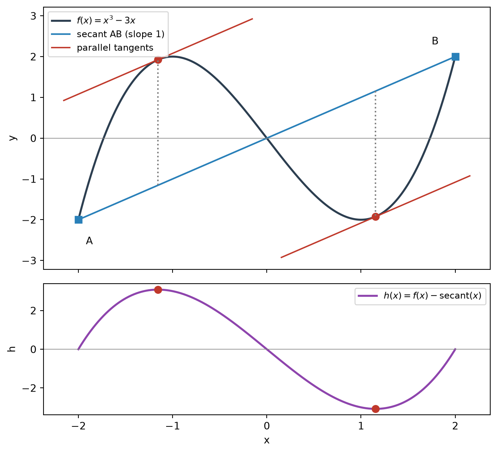
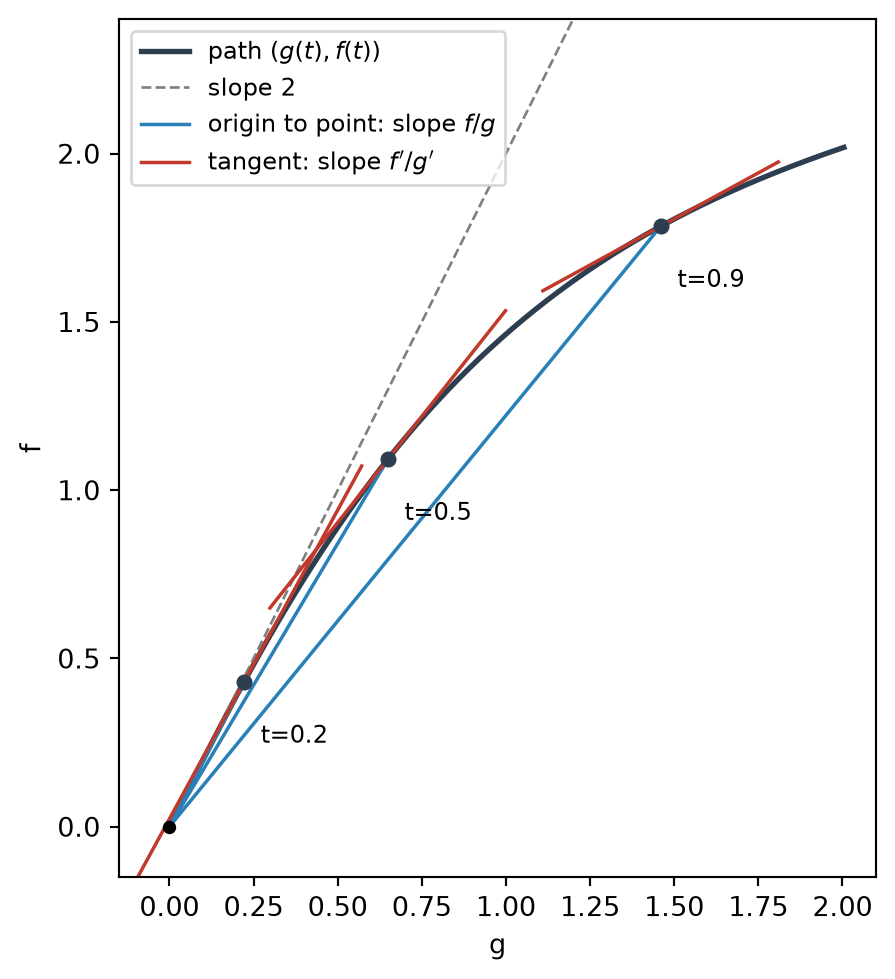

flowchart LR A["Rolle's Theorem"] --> B["Mean Value Theorem<br/>secant slope = tangent slope"] B --> C["Corollary:<br/>f' = 0 implies f constant"] B --> D["Two-function version<br/>(Cauchy MVT)"] D --> E["l'Hospital's Rule<br/>0/0 and ∞/∞"] F["0·∞"] -->|"fg = f / (1/g)"| E G["∞ − ∞"] -->|"common denominator,<br/>rationalize, factor"| E H["0^0, ∞^0, 1^∞"] -->|"ln y = g ln f"| F
Applications of Differentiation: The Mean Value Theorem and l’Hospital’s Rule
A secant always has a parallel tangent, and a contest between 0 and ∞ is decided by rates
This note connects two results that look unrelated at first. The Mean Value Theorem (MVT) says that over any interval, the average rate of change is achieved as an instantaneous rate somewhere inside. l’Hospital’s Rule says that when two functions both vanish (or both blow up), the limit of their ratio is governed by the ratio of their rates. The second idea is a two-function version of the first. Once both are in place, every indeterminate form (\(0\cdot\infty\), \(\infty-\infty\), \(0^0\), \(\infty^0\), \(1^\infty\)) can be rewritten into a quotient and handled the same way.
1 The Mean Value Theorem
1.1 Statement
ImportantMean Value Theorem
Let \(f\) be continuous on \([a,b]\) and differentiable on \((a,b)\). Then there is a number \(c\) with \(a<c<b\) such that \[ f'(c) = \frac{f(b)-f(a)}{b-a}, \] or equivalently, \[ f(b)-f(a) = f'(c)\,(b-a). \]
Two remarks on the hypotheses:
- Differentiability is needed only on the open interval. The endpoints may have vertical tangents. For example, \(f(x)=\sqrt{x}\) is not differentiable at \(0\), yet on \([0,1]\) the equation \(\frac{1}{2\sqrt c}=1\) gives \(c=\tfrac14\).
- The conclusion is pure existence. It says nothing about where \(c\) is or how many such \(c\) there are.
1.2 Geometric meaning
The right-hand side is the slope of the secant line through \(A(a,f(a))\) and \(B(b,f(b))\). The left-hand side is the slope of the tangent line at \(P(c,f(c))\). So the theorem says:
Somewhere strictly between \(a\) and \(b\), the tangent line is parallel to the secant line \(AB\).
There may be several such points.
1.3 Why it holds: the farthest point from the secant
Measure the vertical distance between the curve and the secant line: \[ h(x) = f(x) - \Big[f(a) + \frac{f(b)-f(a)}{b-a}(x-a)\Big]. \] Then \(h(a)=h(b)=0\), so \(h\) starts and ends at zero. Unless \(h\) is identically zero, it moves away from zero somewhere and must turn back, so it has an interior maximum or minimum. At that turning point \(h'(c)=0\) (this is Rolle’s Theorem), and \[ h'(c) = f'(c) - \frac{f(b)-f(a)}{b-a} = 0. \]
The picture to keep in mind: the tangent is parallel to the secant exactly where the curve is locally farthest from the secant. A local maximum of \(h\) is a point where the curve rises farthest above the secant, and a local minimum of \(h\) is where it dips farthest below.

1.4 When the hypotheses fail
| Missing hypothesis | Example | What goes wrong |
|---|---|---|
| Differentiable on \((a,b)\) | \(f(x)=\lvert x\rvert\) on \([-1,1]\) | Secant slope is \(0\), but \(f'(x)\in\{-1,+1\}\) |
| Continuous at an endpoint | \(f(x)=x\) for \(0\le x<1\), \(f(1)=0\) | Secant slope is \(0\), but \(f'\equiv 1\) |
In the first case the corner at \(0\) is where the “turning point” of \(h\) sits, and no tangent exists there. In the second case \(h\) never turns back inside the interval; it jumps back at the endpoint.
1.5 Interpretations
Motion. If \(s(t)\) is position, then \(\frac{s(b)-s(a)}{b-a}\) is the average velocity. The MVT says the instantaneous velocity equals the average velocity at some moment. Covering 200 km in 2 hours means the speedometer read exactly 100 km/h at least once.
Exact linearization. The form \(f(b)-f(a)=f'(c)(b-a)\) replaces a difference of function values by derivative × difference of inputs, with an equality rather than an approximation. In statistics this is the starting point of the delta method: \[ g(\bar X_n)-g(\mu) = g'(\xi_n)\,(\bar X_n-\mu),\qquad \xi_n \text{ between } \bar X_n \text{ and } \mu . \] Since \(\bar X_n\to\mu\) forces \(\xi_n\to\mu\), this gives \(\sqrt n\,\big(g(\bar X_n)-g(\mu)\big)\xrightarrow{d}\mathcal N\!\big(0,\ g'(\mu)^2\sigma^2\big)\).
Constant functions. If \(f'(x)=0\) on an interval, then \(f(x_2)-f(x_1)=f'(c)(x_2-x_1)=0\) for any two points, so \(f\) is constant. If \(f'=g'\), applying this to \(f-g\) shows that \(f-g\) is constant. This is why an antiderivative is determined only up to \(+C\).
2 Indeterminate Forms of Type \(\frac00\) and \(\frac{\infty}{\infty}\)
2.1 Why the limit is not determined by the values
If \(f(x)\to0\) and \(g(x)\to0\), the quotient \(f/g\) can approach anything: \[ \frac{x^2}{x}\to0,\qquad \frac{x}{x^2}\to\infty,\qquad \frac{\sin x}{x}\to1\qquad(x\to0). \] The values alone only say “both are small”. What decides the limit is how fast each one becomes small.
2.2 l’Hospital’s Rule
Importantl’Hospital’s Rule
Suppose \(f\) and \(g\) are differentiable and \(g'(x)\neq0\) near \(a\) (except possibly at \(a\)), and that \(\frac{f}{g}\) is of type \(\frac00\) or \(\frac{\pm\infty}{\pm\infty}\) as \(x\to a\). Then \[ \lim_{x\to a}\frac{f(x)}{g(x)} = \lim_{x\to a}\frac{f'(x)}{g'(x)} \] if the limit on the right exists (or is \(\pm\infty\)). The same holds for \(x\to a^{\pm}\) and \(x\to\pm\infty\).
2.3 Intuition 1: zoom in until the graphs are straight
Near \(a\), a differentiable function looks like its tangent line. If \(f(a)=g(a)=0\), \[ f(x)\approx f'(a)(x-a),\qquad g(x)\approx g'(a)(x-a), \] so \[ \frac{f(x)}{g(x)}\approx\frac{f'(a)\,(x-a)}{g'(a)\,(x-a)}=\frac{f'(a)}{g'(a)} . \] Both functions vanish because they share the factor \((x-a)\). Cancelling it leaves the ratio of slopes. When \(f'\) and \(g'\) are continuous and \(g'(a)\neq0\), this approximation becomes an exact equality.
If the slopes also vanish, the linear terms give \(\frac00\) again. Zoom in one level further and compare the quadratic terms. Applying the rule twice does exactly this: \[ \lim_{x\to0}\frac{1-\cos x}{x^2}=\lim_{x\to0}\frac{\sin x}{2x}=\lim_{x\to0}\frac{\cos x}{2}=\frac12, \] which matches \(1-\cos x\approx\tfrac12x^2\). Repeated use of the rule is a search for the lowest-order terms of the numerator and denominator.
2.4 Intuition 2: position direction versus velocity direction
Let a point move in the plane along \(\big(g(t),\,f(t)\big)\). Then:
| Quantity | Geometric meaning |
|---|---|
| \(\dfrac{f(t)}{g(t)}\) | slope of the segment from the origin to the point |
| \(\dfrac{f'(t)}{g'(t)}\) | slope of the direction of motion (the tangent to the path) |
- Type \(\frac00\). The point runs into the origin. A path entering the origin arrives along its direction of motion, so the direction “seen from the origin” and the direction of motion line up.
- Type \(\frac{\infty}{\infty}\). The point runs off to infinity. Far away, where the path started becomes negligible, so the direction seen from the origin lines up with the direction of travel.
In both cases, l’Hospital’s Rule states that the direction of position equals the direction of motion in the limit. This is the MVT picture (secant ∥ tangent) moved onto a parametric curve, with one end of the secant pinned at the origin.

2.5 Type \(\frac{\infty}{\infty}\): who grows faster
For two functions that both grow without bound, the ratio is governed by the ratio of their growth rates: \[ \lim_{x\to\infty}\frac{\ln x}{x}=\lim_{x\to\infty}\frac{1/x}{1}=0 . \] The growth rate of \(\ln x\) dies out while that of \(x\) stays at \(1\). Similarly, \(x^n/e^x\to0\) for every \(n\): after \(n\) applications the numerator is a constant while the denominator is still \(e^x\). This gives the standard hierarchy as \(x\to\infty\): \[ \ln x \;\ll\; x^p\ (p>0) \;\ll\; e^x . \]
2.6 Reading the rule correctly
- Check the form first. The rule says nothing when the quotient is not indeterminate. For instance, \(\lim_{x\to0}\frac{\sin x}{x+1}=0\), while differentiating anyway gives the wrong value \(\frac{\cos0}{1}=1\). There is no common factor \((x-a)\) to cancel.
- Differentiate separately. The rule uses \(f'/g'\), not the derivative of the quotient \((f/g)'\).
- The implication goes one way. If \(\lim f'/g'\) does not exist, the rule is silent; it does not say \(\lim f/g\) fails to exist. For example, \[ \lim_{x\to\infty}\frac{x+\sin x}{x}=1,\qquad\text{but}\qquad \frac{(x+\sin x)'}{x'}=1+\cos x\ \text{ oscillates}. \] In the parametric picture, the position direction settles down while the direction of motion keeps wobbling.
- Watch for loops. For \(\dfrac{e^x-e^{-x}}{e^x+e^{-x}}\) as \(x\to\infty\), differentiating just swaps numerator and denominator. Divide through by \(e^x\) instead.
- Avoid circular reasoning. Computing \(\lim_{x\to0}\frac{\sin x}{x}\) by the rule uses \((\sin x)'=\cos x\), which is itself derived from that limit.
3 Other Indeterminate Forms
Every remaining form is a tug of war: one factor pulls the expression toward \(0\) (or \(-\infty\)), the other toward \(\infty\), and the outcome depends on which pulls faster. The strategy is always to rewrite the expression as a quotient of type \(\frac00\) or \(\frac{\infty}{\infty}\).
3.1 Products: \(0\cdot\infty\)
Move one factor into the denominator: \[ fg=\frac{f}{1/g}\qquad\text{or}\qquad fg=\frac{g}{1/f}. \] Choose the version that becomes simpler after differentiation. For \(x\to0^+\), \[ \lim_{x\to0^+}x\ln x=\lim_{x\to0^+}\frac{\ln x}{1/x}=\lim_{x\to0^+}\frac{1/x}{-1/x^2}=\lim_{x\to0^+}(-x)=0 . \] Keeping \(\ln x\) in the numerator works because its derivative \(1/x\) is clean. The other choice, \(\frac{x}{1/\ln x}\), is also of type \(\frac00\), but the derivative of \(1/\ln x\) is \(-\frac{1}{x(\ln x)^2}\), which is worse than the original expression.
The result shows that \(x\) goes to \(0\) faster than \(\ln x\) goes to \(-\infty\). Together with \(f'(x)=1+\ln x\) and \(f''(x)=1/x>0\), it fixes the shape of \(y=x\ln x\): it starts at the origin, dips to an absolute minimum \(-1/e\) at \(x=1/e\), and is concave up throughout.
![y = x ln x on (0, 2.2]. The limit x ln x → 0 as x → 0⁺ pins the left end of the curve to the origin; the absolute minimum is −1/e at x = 1/e.](6_applications_mean_value_theorem_lhospital_files/figure-html/fig-xlnx-output-1.png){#fig-xlnx width=607 height=374}
3.2 Differences: \(\infty-\infty\)
Convert the difference into a quotient using a common denominator, rationalization, or factoring out a common factor. For \(x\to(\pi/2)^-\), \[ \lim(\sec x-\tan x)=\lim\frac{1-\sin x}{\cos x}\;\Big(\tfrac00\Big)=\lim\frac{-\cos x}{-\sin x}=0 . \]
3.3 Powers: \(0^0\), \(\infty^0\), \(1^\infty\)
For \(y=[f(x)]^{g(x)}\), take logarithms: \[ \ln y = g(x)\ln f(x) \qquad\text{or equivalently}\qquad [f(x)]^{g(x)} = e^{\,g(x)\ln f(x)} . \] All three power forms turn into a product of type \(0\cdot\infty\):
| Form | \(\lim f\) | \(\lim g\) | \(g\ln f\) |
|---|---|---|---|
| \(0^0\) | \(0\) | \(0\) | \(0\cdot(-\infty)\) |
| \(\infty^0\) | \(\infty\) | \(0\) | \(0\cdot\infty\) |
| \(1^\infty\) | \(1\) | \(\pm\infty\) | \(\pm\infty\cdot0\) (since \(\ln1=0\)) |
After finding \(\lim\ln y=L\), return to \(y\): since \(y=e^{\ln y}\) and \(e^x\) is continuous, \(\lim y=e^L\). Reporting \(L\) instead of \(e^L\) is the most common mistake.
Example (\(1^\infty\)). \[ \lim_{x\to0^+}\ln(1+\sin4x)^{\cot x} =\lim_{x\to0^+}\frac{\ln(1+\sin4x)}{\tan x} =\lim_{x\to0^+}\frac{\dfrac{4\cos4x}{1+\sin4x}}{\sec^2x}=4, \qquad\text{so}\qquad \lim_{x\to0^+}(1+\sin4x)^{\cot x}=e^4 . \]
TipA shortcut view of \(1^\infty\)
Since \(\ln(1+\varepsilon)\approx\varepsilon\) for small \(\varepsilon\), \[ (1+\varepsilon)^N = e^{N\ln(1+\varepsilon)} \approx e^{N\varepsilon}. \] The limit is decided by (deviation from 1) × (exponent). Above, \(\sin4x\approx4x\) and \(\cot x\approx\frac1x\), so the product tends to \(4\) and the answer is \(e^4\). The same structure gives \(\left(1+\frac1n\right)^n\to e\).
3.4 Forms that are not indeterminate
When both effects pull in the same direction, there is no contest:
- \(0^\infty\): \(\ln y=g\ln f\to(+\infty)(-\infty)=-\infty\), so \(y\to0\).
- \(\infty+\infty=\infty\), \(\ \infty\cdot\infty=\infty\), \(\ \dfrac{0}{\infty}=0\), \(\ \dfrac{\infty}{0^+}=\infty\).
4 Summary
| Form | Rewrite | Then |
|---|---|---|
| \(\frac00\), \(\frac{\infty}{\infty}\) | none | l’Hospital directly |
| \(0\cdot\infty\) | \(\dfrac{f}{1/g}\) or \(\dfrac{g}{1/f}\) (pick the simpler) | \(\frac00\) or \(\frac{\infty}{\infty}\) |
| \(\infty-\infty\) | common denominator, rationalize, factor | \(\frac00\) or \(\frac{\infty}{\infty}\) |
| \(0^0\), \(\infty^0\), \(1^\infty\) | \(\ln y=g\ln f\) | \(0\cdot\infty\), then \(\lim y=e^{\lim\ln y}\) |
The chain of reductions is power → (log) → product → (reciprocal) → quotient → l’Hospital.
| Result | Core message |
|---|---|
| Mean Value Theorem | Average rate of change is attained as an instantaneous rate at an interior point |
| Its corollary | \(f'\equiv0\) on an interval \(\Rightarrow\) \(f\) is constant |
| l’Hospital’s Rule | When values give no information (\(\frac00\), \(\frac\infty\infty\)), compare rates |
5 Common Pitfalls
- Stating the MVT with too few hypotheses. A single corner (\(\lvert x\rvert\)) or a jump at an endpoint breaks the conclusion.
- Expecting the MVT to locate \(c\). It only guarantees existence; there may be several such points.
- Applying l’Hospital to a determinate form. Always confirm \(\frac00\) or \(\frac{\infty}{\infty}\) before differentiating.
- Using the quotient rule instead. Differentiate numerator and denominator separately.
- Concluding non-existence from \(f'/g'\). If \(\lim f'/g'\) does not exist, try another method.
- Choosing the harder rewrite for \(0\cdot\infty\). Keep logarithms in the numerator.
- Stopping at \(\ln y\). For power forms, the answer is \(e^{\lim\ln y}\).
- Treating \(0^\infty\) as indeterminate. It always tends to \(0\).